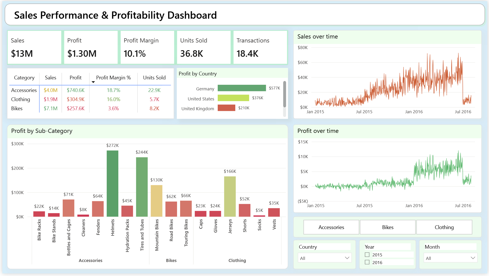

Key Metrics
3/4 Year
75%
Applied Statistics Degree HBSc
4
Work Experiences
2
Analytics Projects
About Me
Hey, I’m Zain. I’m a third year Honours Bachelor of Science student in Applied Statistics at the University of Toronto, with minors in Computer Science and Mathematics.
I love turning messy data into clear stories. There’s something satisfying about cleaning up raw numbers, validating what makes sense, and creating those eye catching visualizations that make people stop and think. I’m focused on data analytics and data visualization, working with real datasets that actually matter.
I’m curious by nature, always learning, and I enjoy understanding how data flows from collection to insight. I’m the kind of person who digs in and helps the team get it right. Over time, I’m aiming to go deeper into data science, automation, and more model driven work.
Current Work
I’m currently a Data Analyst Intern at African Geospace, working on Wholeviz, an AI powered data visualization platform that makes data exploration and chart creation accessible for non technical users like NGOs, journalists, and public sector teams.
My work focuses on data quality and validation across data processing workflows. I dig into dataset joins, hunt down edge cases, and verify analytical outputs are accurate before they reach users. I also collaborate with analysts and engineers to document data flows and ensure backend logic matches what users see. Working on an AI assisted, real world product has taught me how data, analytics, and software come together in production, especially when building for non technical audiences.
More About Me
I’m always learning. Right now, I’m working through the IBM Data Analytics Professional Certificate while building my skills in Excel, SQL, Python with Pandas, and business intelligence tools. I regularly take on analytics projects outside of coursework to practice the full cycle: cleaning data, running analysis, and presenting findings that actually make sense.
My background in statistics helps me think carefully about what data actually means. I’m gradually moving toward more advanced analytics and machine learning topics, but I’d rather understand the fundamentals deeply than rush ahead.
Off the clock, I’m playing volleyball or table tennis, taking long walks around Mississauga, or grabbing coffee with friends. I have to touch grass and take those long walks to stay sane. I’m genuinely curious about how things work and enjoy turning that curiosity into practical projects.
I’m always open to collaborating on interesting projects. If you think I’d be useful on your team, let’s talk.
Get in touch: zain.ghias@mail.utoronto.ca
Looking for opportunities in Data Analytics, Business Analysis, or Data Science. Open to roles focused on analytical problem-solving, data pipelines, and insight generation.
2 Active

Bike Share Toronto Analysis
Analyzing ridership patterns year-over-year to assess network efficiency and demand alignment. Financial estimation analysis for trips to evaluate operational performance and resource allocation.
Stack: Excel · Tableau

Customer & Product Profitability Analytics Dashboard
End-to-end analytics project using SQL for data cleaning and transformation, with Power BI dashboards revealing revenue trends, profitability, and customer behavior insights.
Stack: SQL · Power BI · Python
2 Active
Data Analyst Intern
African Geospace
Dec 2025 – Present · Remote
QA, validation, and documentation for cloud-based data visualization platform.
Key Responsibilities
• Contributing to QA, validation, and documentation for Wholeviz, a cloud-based data visualization platform that enables no-code chart creation and data exploration, with a focus on user clarity and correctness.
• Reviewing and testing data processing pipelines, including dataset joins, data quality checks, and evaluation outputs, using metrics such as accuracy, precision, and recall to ensure correctness and clear user-facing behavior.
• Collaborating with data analysts and engineers to document data flows, edge cases, and backend integration notes, ensuring analytical logic and user-facing behavior are well aligned.
Technologies
Data Pipelines · Quality Assurance · Python · SQL · Git
← Click to flip back
Software Engineer Intern
African Geospace
Sep 2025 – Dec 2025 · 4 mos
Developing AI-powered no-code data visualization platform at early-stage startup.
Key Responsibilities
• Developing an AI-powered no-code data visualization platform at an early-stage startup that supports NGOs, journalists, and public teams in creating accessible dashboards and visual stories.
• Worked on UI/UX design and front-end implementation of the Visualize page, the main interface where users create charts and receive AI chart suggestions. Contributed to building the platform’s MVP by designing and implementing the workflow for creating, refining, and sharing visualizations.
• Collaborated with engineers and data analysts to enhance design consistency, improve performance, and expand visualization features using React, Next.js, Tailwind, TypeScript, and Plotly.
Technologies
React · Next.js · TypeScript · Tailwind · Plotly · Data Visualization · Git
← Click to flip back
Frontend Developer
Digital Placemaking Canada
Nov 2025 – Present · Contract Part-time
Frontend development and UX redesign for AI-driven civic-intelligence platform.
Key Responsibilities
• Contributing to the frontend development and UX redesign of KinesisIQ, an AI-driven civic-intelligence platform used by public-sector and community organizations. Building responsive web pages, dashboard layouts, and interactive data visualizations that support insight generation and storytelling.
• Collaborating with designers, developers, and stakeholders to refine user flows, improve usability, and align the platform’s interface with project goals. Developing reusable React components and user-centric features that enhance engagement.
• This contract project is completed through the IBM SkillsBuild × Riipen program.
Technologies
React · HTML · CSS · JavaScript · UX Design · Responsive Web Design · Data Visualization
← Click to flip back
Frontend Developer Intern
Quor
May 2025 – Aug 2025 · 4 mos
Built and refined cross-platform mobile app with small startup team.
Key Responsibilities
• Worked with a small startup team to build and refine a cross-platform mobile app. Designed and developed app screens and navigation flows using React Native (Expo) and TypeScript.
• Created reusable UI components for consistent styling and faster development. Used Android Studio virtual devices to test layouts across multiple screen sizes, ensuring responsive design.
• Built a dynamic map component with location pins and styled overlay. Added search bar, user cards, and filter options to enhance user experience. Helped keep the code organized, modular, and easy to update while building from the ground up.
• Contributed to a shared codebase on GitHub, using pull requests, code reviews, and version control to coordinate development with the team.
Technologies
React Native · TypeScript · JavaScript · Android Studio · Git · Mobile Development
← Click to flip back
1 Active
Data Analytics Professional Certificate
IBM via Coursera
Oct 2025 – Ongoing
Comprehensive training in Excel, SQL, Python, and business intelligence.
Coursework
Excel fundamentals and advanced data analysis. SQL for data extraction and manipulation. Python programming with Pandas for data science. IBM Cognos Analytics for business intelligence and data visualization.
Skills Gained
Data Analysis · Statistical Methods · Business Intelligence · Data Visualization
← Click to flip back
Data Analysis | SQL, Tableau, Power BI & Excel
Udemy
Oct 2025
Real projects covering data cleaning, business intelligence, and data visualization.
Coursework
Comprehensive data analysis training with hands-on projects. SQL for data extraction and manipulation. Tableau and Power BI for business intelligence and data visualization. Excel for data cleaning and analysis.
Skills Gained
Data Cleaning · Business Intelligence · MySQL · SQL · Tableau · Power BI · Data Visualization · Statistics · Data Analytics
← Click to flip back
The Web Developer Bootcamp 2024
Udemy
Aug 2024
74-hour comprehensive full-stack web development course.
Coursework
Full-stack web development covering frontend and backend technologies. React.js for frontend development. Node.js, Express.js, and MongoDB for backend. HTML5, CSS3, and JavaScript fundamentals.
Skills Gained
React.js · Node.js · MongoDB · Express.js · JavaScript · HTML5 · CSS3 · Full-Stack Development · Responsive Web Design
← Click to flip back
User Experience Design Fundamentals
IBM SkillsBuild
Nov 2025
UX design concepts, processes, and tools for creating user-centered designs.
Coursework
Demonstrates knowledge of UX design concepts, processes, and tools. Understanding of user personas, wireframes, prototypes, usability testing, and collaborative UX design workflows. Experience reviewing UX design case studies and making conclusions about website redesigns.
Skills Gained
User Experience Design · User Interface Design · Wireframing · Prototyping · Usability Testing · User Personas · User Stories · Design Research · Information Architecture · Web Accessibility
← Click to flip back
16 Skills
 Python
Python  SQL
SQL  Pandas
Pandas  NumPy
NumPy  R
R  Tableau
Tableau  Power BI
Power BI  Excel
Excel  React
React  Next.js
Next.js  TypeScript
TypeScript  JavaScript
JavaScript  Tailwind
Tailwind  HTML
HTML  CSS
CSS  Git
Git